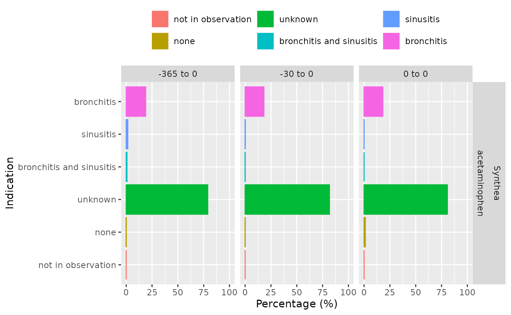

Identify and summarise indications among a drug cohort
Source:vignettes/indication.Rmd
indication.RmdIntroduction
In this vignette, we demonstrate the functionality provided by the DrugUtilisation package to help understand the indications of patients in a drug cohort.
The DrugUtilisation package is designed to work with data in the OMOP CDM format, so our first step is to create a reference to the data using the DBI and CDMConnector packages.
library(DrugUtilisation)
con <- DBI::dbConnect(duckdb::duckdb(), CDMConnector::eunomiaDir())
cdm <- CDMConnector::cdm_from_con(
con = con,
cdm_schema = "main",
write_schema = "main"
)Create a drug utilisation cohort
We will use acetaminophen as our example drug. We’ll start by creating a cohort of acetaminophen users. Here we’ll include all acetaminophen records using a gap era of 7 days, but as we’ve seen in the previous vignette we could have also applied various other inclusion criteria.
cdm <- generateIngredientCohortSet(
cdm = cdm,
name = "acetaminophen_users",
ingredient = "acetaminophen",
gapEra = 7
)Note that addIndication works with a cohort as input, in
this example we will use drug cohorts created with
generateDrugUtilisationCohortSet but the input cohorts can
be generated using many other ways.
Create a indication cohort
Next we will create a set of indication cohorts. In this case we will
create cohorts for sinusitis and bronchitis using
CDMConnector::generateConceptCohortSet().
indications <- list(
sinusitis = c(257012, 4294548, 40481087),
bronchitis = c(260139, 258780)
)
cdm <- CDMConnector::generateConceptCohortSet(
cdm = cdm, name = "indications_cohort", indications, end = 0
)
cdmAdd indications with addIndication() function
Now that we have these two cohort tables, one with our drug cohort and another with our indications cohort, we can assess patient indications. For this we will specify a time window around the drug cohort start date for which we identify any intersection with the indication cohort. We can add this information as a new variable on our cohort table. This function will add a new column per window provided with the label of the indication.
cdm[["acetaminophen_users"]] <- cdm[["acetaminophen_users"]] |>
addIndication(
indicationCohortName = "indications_cohort",
indicationWindow = list(c(-30, 0)),
indexDate = "cohort_start_date"
)
cdm[["acetaminophen_users"]] |>
dplyr::glimpse()
#> Rows: ??
#> Columns: 5
#> Database: DuckDB v1.1.3 [unknown@Linux 6.8.0-1017-azure:R 4.4.2//tmp/RtmpKHhnqJ/file2502316efbf3.duckdb]
#> $ cohort_definition_id <int> 1, 1, 1, 1, 1, 1, 1, 1, 1, 1, 1, 1, 1, 1, 1, 1, 1…
#> $ subject_id <int> 859, 1239, 2384, 2485, 2692, 640, 1092, 1216, 850…
#> $ cohort_start_date <date> 1970-05-26, 2010-02-27, 2003-10-11, 1920-04-28, …
#> $ cohort_end_date <date> 1970-06-09, 2010-03-13, 2003-10-18, 1920-05-12, …
#> $ indication_m30_to_0 <chr> "bronchitis", "bronchitis", "bronchitis", "bronch…We can see that individuals are classified as having sinusistis (without bronchitis), bronchitis (without sinusitis), sinusitis and bronchitis, or no observed indication.
cdm[["acetaminophen_users"]] |>
dplyr::group_by(indication_m30_to_0) |>
dplyr::tally()
#> # Source: SQL [?? x 2]
#> # Database: DuckDB v1.1.3 [unknown@Linux 6.8.0-1017-azure:R 4.4.2//tmp/RtmpKHhnqJ/file2502316efbf3.duckdb]
#> indication_m30_to_0 n
#> <chr> <dbl>
#> 1 bronchitis and sinusitis 3
#> 2 bronchitis 2527
#> 3 sinusitis 18
#> 4 none 11351As well as the indication cohort table, we can also use the clinical tables in the OMOP CDM to identify other, unknown, indications. Here we consider anyone who is not in an indication cohort but has a record in the condition occurrence table to have an “unknown” indication. We can see that many of the people previously considered to have no indication are now considered as having an unknown indication as they have a condition occurrence record in the 30 days up to their drug initiation.
cdm[["acetaminophen_users"]] |>
dplyr::select(!"indication_m30_to_0") |>
addIndication(
indicationCohortName = "indications_cohort",
indicationWindow = list(c(-30, 0)),
unknownIndicationTable = "condition_occurrence"
) |>
dplyr::group_by(indication_m30_to_0) |>
dplyr::tally()
#> # Source: SQL [?? x 2]
#> # Database: DuckDB v1.1.3 [unknown@Linux 6.8.0-1017-azure:R 4.4.2//tmp/RtmpKHhnqJ/file2502316efbf3.duckdb]
#> indication_m30_to_0 n
#> <chr> <dbl>
#> 1 bronchitis 2527
#> 2 bronchitis and sinusitis 3
#> 3 unknown 11344
#> 4 sinusitis 18
#> 5 none 7We can add indications for multiple time windows. Unsurprisingly we find more potential indications for wider windows (although this will likely increase our risk of false positives).
cdm[["acetaminophen_users"]] <- cdm[["acetaminophen_users"]] |>
dplyr::select(!"indication_m30_to_0") |>
addIndication(
indicationCohortName = "indications_cohort",
indicationWindow = list(c(0, 0), c(-30, 0), c(-365, 0)),
unknownIndicationTable = "condition_occurrence"
)
cdm[["acetaminophen_users"]] |>
dplyr::group_by(indication_0_to_0) |>
dplyr::tally()
#> # Source: SQL [?? x 2]
#> # Database: DuckDB v1.1.3 [unknown@Linux 6.8.0-1017-azure:R 4.4.2//tmp/RtmpKHhnqJ/file2502316efbf3.duckdb]
#> indication_0_to_0 n
#> <chr> <dbl>
#> 1 unknown 11211
#> 2 none 163
#> 3 sinusitis 1
#> 4 bronchitis 2524
cdm[["acetaminophen_users"]] |>
dplyr::group_by(indication_m30_to_0) |>
dplyr::tally()
#> # Source: SQL [?? x 2]
#> # Database: DuckDB v1.1.3 [unknown@Linux 6.8.0-1017-azure:R 4.4.2//tmp/RtmpKHhnqJ/file2502316efbf3.duckdb]
#> indication_m30_to_0 n
#> <chr> <dbl>
#> 1 bronchitis 2527
#> 2 unknown 11344
#> 3 bronchitis and sinusitis 3
#> 4 sinusitis 18
#> 5 none 7
cdm[["acetaminophen_users"]] |>
dplyr::group_by(indication_m365_to_0) |>
dplyr::tally()
#> # Source: SQL [?? x 2]
#> # Database: DuckDB v1.1.3 [unknown@Linux 6.8.0-1017-azure:R 4.4.2//tmp/RtmpKHhnqJ/file2502316efbf3.duckdb]
#> indication_m365_to_0 n
#> <chr> <dbl>
#> 1 bronchitis and sinusitis 101
#> 2 unknown 10968
#> 3 sinusitis 211
#> 4 none 4
#> 5 bronchitis 2615Summarise indications with summariseIndication()
Instead of adding variables with indications like above, we could
instead obtain a general summary of observed indications.
summariseIndication has similar arguments to
addIndication(), but returns a summary result of the
indication.
indicationSummary <- cdm[["acetaminophen_users"]] |>
dplyr::select(!dplyr::starts_with("indication")) |>
summariseIndication(
indicationCohortName = "indications_cohort",
indicationWindow = list(c(0, 0), c(-30, 0), c(-365, 0)),
unknownIndicationTable = c("condition_occurrence")
)We can then easily create a plot or a table of the results
tableIndication(indicationSummary)|
cdm_name
|
||||||
|---|---|---|---|---|---|---|
|
Synthea synthetic health database
|
||||||
| censor_date | cohort_table_name | index_date | indication_cohort_name | Indication | estimate_name |
cohort_name
|
| acetaminophen | ||||||
| Indication on index date | ||||||
| NA | temp | cohort_start_date | indications_cohort | bronchitis | N (%) | 2,524 (18.2 %) |
| NA | temp | cohort_start_date | indications_cohort | sinusitis | N (%) | 1 (0.0 %) |
| NA | temp | cohort_start_date | indications_cohort | bronchitis and sinusitis | N (%) | 0 (0.0 %) |
| NA | temp | cohort_start_date | indications_cohort | unknown | N (%) | 11,211 (80.7 %) |
| NA | temp | cohort_start_date | indications_cohort | none | N (%) | 163 (1.2 %) |
| NA | temp | cohort_start_date | indications_cohort | not in observation | N (%) | 0 (0.0 %) |
| Indication from 30 days before to the index date | ||||||
| NA | temp | cohort_start_date | indications_cohort | bronchitis | N (%) | 2,527 (18.2 %) |
| NA | temp | cohort_start_date | indications_cohort | sinusitis | N (%) | 18 (0.1 %) |
| NA | temp | cohort_start_date | indications_cohort | bronchitis and sinusitis | N (%) | 3 (0.0 %) |
| NA | temp | cohort_start_date | indications_cohort | unknown | N (%) | 11,344 (81.6 %) |
| NA | temp | cohort_start_date | indications_cohort | none | N (%) | 7 (0.1 %) |
| NA | temp | cohort_start_date | indications_cohort | not in observation | N (%) | 0 (0.0 %) |
| Indication from 365 days before to the index date | ||||||
| NA | temp | cohort_start_date | indications_cohort | bronchitis | N (%) | 2,615 (18.8 %) |
| NA | temp | cohort_start_date | indications_cohort | sinusitis | N (%) | 211 (1.5 %) |
| NA | temp | cohort_start_date | indications_cohort | bronchitis and sinusitis | N (%) | 101 (0.7 %) |
| NA | temp | cohort_start_date | indications_cohort | unknown | N (%) | 10,968 (78.9 %) |
| NA | temp | cohort_start_date | indications_cohort | none | N (%) | 4 (0.0 %) |
| NA | temp | cohort_start_date | indications_cohort | not in observation | N (%) | 0 (0.0 %) |
plotIndication(indicationSummary)
As well as getting these overall results, we can also stratify the results by some variables of interest. For example, here we stratify our results by age groups and sex.
indicationSummaryStratified <- cdm[["acetaminophen_users"]] |>
dplyr::select(!dplyr::starts_with("indication")) |>
PatientProfiles::addDemographics(ageGroup = list(c(0, 19), c(20, 150))) |>
summariseIndication(
strata = list("age_group", "sex"),
indicationCohortName = "indications_cohort",
indicationWindow = list(c(0, 0), c(-30, 0), c(-365, 0)),
unknownIndicationTable = c("condition_occurrence")
)
tableIndication(indicationSummaryStratified)|
cdm_name
|
||||||||||
|---|---|---|---|---|---|---|---|---|---|---|
|
Synthea synthetic health database
|
||||||||||
|
cohort_name
|
||||||||||
|
acetaminophen
|
||||||||||
|
age_group
|
||||||||||
|
overall
|
0 to 19
|
20 to 150
|
overall
|
|||||||
| censor_date | cohort_table_name | index_date | indication_cohort_name | Indication | estimate_name |
sex
|
||||
| overall | overall | overall | Female | Male | ||||||
| Indication on index date | ||||||||||
| NA | temp | cohort_start_date | indications_cohort | bronchitis | N (%) | 2,524 (18.2 %) | 1,823 (29.9 %) | 701 (9.0 %) | 1,290 (18.4 %) | 1,234 (17.9 %) |
| NA | temp | cohort_start_date | indications_cohort | sinusitis | N (%) | 1 (0.0 %) | 1 (0.0 %) | 0 (0.0 %) | 0 (0.0 %) | 1 (0.0 %) |
| NA | temp | cohort_start_date | indications_cohort | bronchitis and sinusitis | N (%) | 0 (0.0 %) | 0 (0.0 %) | 0 (0.0 %) | 0 (0.0 %) | 0 (0.0 %) |
| NA | temp | cohort_start_date | indications_cohort | unknown | N (%) | 11,211 (80.7 %) | 4,242 (69.6 %) | 6,969 (89.3 %) | 5,619 (80.2 %) | 5,592 (81.1 %) |
| NA | temp | cohort_start_date | indications_cohort | none | N (%) | 163 (1.2 %) | 30 (0.5 %) | 133 (1.7 %) | 95 (1.4 %) | 68 (1.0 %) |
| NA | temp | cohort_start_date | indications_cohort | not in observation | N (%) | 0 (0.0 %) | 0 (0.0 %) | 0 (0.0 %) | 0 (0.0 %) | 0 (0.0 %) |
| Indication from 30 days before to the index date | ||||||||||
| NA | temp | cohort_start_date | indications_cohort | bronchitis | N (%) | 2,527 (18.2 %) | 1,826 (30.0 %) | 701 (9.0 %) | 1,291 (18.4 %) | 1,236 (17.9 %) |
| NA | temp | cohort_start_date | indications_cohort | sinusitis | N (%) | 18 (0.1 %) | 15 (0.2 %) | 3 (0.0 %) | 11 (0.2 %) | 7 (0.1 %) |
| NA | temp | cohort_start_date | indications_cohort | bronchitis and sinusitis | N (%) | 3 (0.0 %) | 2 (0.0 %) | 1 (0.0 %) | 1 (0.0 %) | 2 (0.0 %) |
| NA | temp | cohort_start_date | indications_cohort | unknown | N (%) | 11,344 (81.6 %) | 4,253 (69.8 %) | 7,091 (90.9 %) | 5,701 (81.4 %) | 5,643 (81.8 %) |
| NA | temp | cohort_start_date | indications_cohort | none | N (%) | 7 (0.1 %) | 0 (0.0 %) | 7 (0.1 %) | 0 (0.0 %) | 7 (0.1 %) |
| NA | temp | cohort_start_date | indications_cohort | not in observation | N (%) | 0 (0.0 %) | 0 (0.0 %) | 0 (0.0 %) | 0 (0.0 %) | 0 (0.0 %) |
| Indication from 365 days before to the index date | ||||||||||
| NA | temp | cohort_start_date | indications_cohort | bronchitis | N (%) | 2,615 (18.8 %) | 1,883 (30.9 %) | 732 (9.4 %) | 1,353 (19.3 %) | 1,262 (18.3 %) |
| NA | temp | cohort_start_date | indications_cohort | sinusitis | N (%) | 211 (1.5 %) | 191 (3.1 %) | 20 (0.3 %) | 108 (1.5 %) | 103 (1.5 %) |
| NA | temp | cohort_start_date | indications_cohort | bronchitis and sinusitis | N (%) | 101 (0.7 %) | 96 (1.6 %) | 5 (0.1 %) | 39 (0.6 %) | 62 (0.9 %) |
| NA | temp | cohort_start_date | indications_cohort | unknown | N (%) | 10,968 (78.9 %) | 3,926 (64.4 %) | 7,042 (90.2 %) | 5,504 (78.6 %) | 5,464 (79.2 %) |
| NA | temp | cohort_start_date | indications_cohort | none | N (%) | 4 (0.0 %) | 0 (0.0 %) | 4 (0.1 %) | 0 (0.0 %) | 4 (0.1 %) |
| NA | temp | cohort_start_date | indications_cohort | not in observation | N (%) | 0 (0.0 %) | 0 (0.0 %) | 0 (0.0 %) | 0 (0.0 %) | 0 (0.0 %) |
indicationSummaryStratified |>
dplyr::filter(variable_name == "Indication on index date") |>
plotIndication(
facet = . ~ age_group + sex,
colour = "variable_level"
)